マニュアル
導入から書き出しまで。読みながら手を動かせる順に並べてあります。画面写真はすべて実際のアプリのものです。
一 動作環境とインストール
- 動作環境
- macOS 13 Ventura 以降（Mac Catalyst アプリ）。Apple Silicon / Intel の両方で動きます。
- 扱えるファイル
- EPUB（
.epub）。フォルダを渡した場合は、サブフォルダまで探して中の EPUB をまとめて登録します。 - 読み上げに必要なもの
- VOICEVOX または AivisSpeech。読ませないなら不要です。
入れる
- Releases からダウンロードします（DMG、0.2.0 以前は ZIP）。
- DMG なら開いて
EpubReaderSpike.appをApplicationsへドラッグ、ZIP なら展開して/Applicationsへ入れます。 - 初回だけ、右クリック →「開く」（ダブルクリックでは開けません）→ もう一度「開く」。
システム設定 → プライバシーとセキュリティ →「このまま開く」でも構いません。コマンドでよければ次のとおりです。
xattr -dr com.apple.quarantine /Applications/EpubReaderSpike.app二 最初の五分
細かい設定は後回しにして、まず読めるところまで進みます。
- アプリを起動します。空の書棚と、動作確認用の見本が入った状態で始まります。
- 手持ちの EPUB（またはそれが入ったフォルダ）をウィンドウへドラッグ＆ドロップします。
- 表紙をダブルクリックして開きます。縦書きの本なら、そのまま右から左へ読める状態で出ます。
- ページを送るのは矢印キーかマウスホイール。⌘= と ⇧⌘- で文字の大きさを合わせます。
- 読み上げを使うなら VOICEVOX を起動し、⌘, の「読み上げ」タブで接続済みを確かめてから、本文をダブルクリックします。
{kind=link}
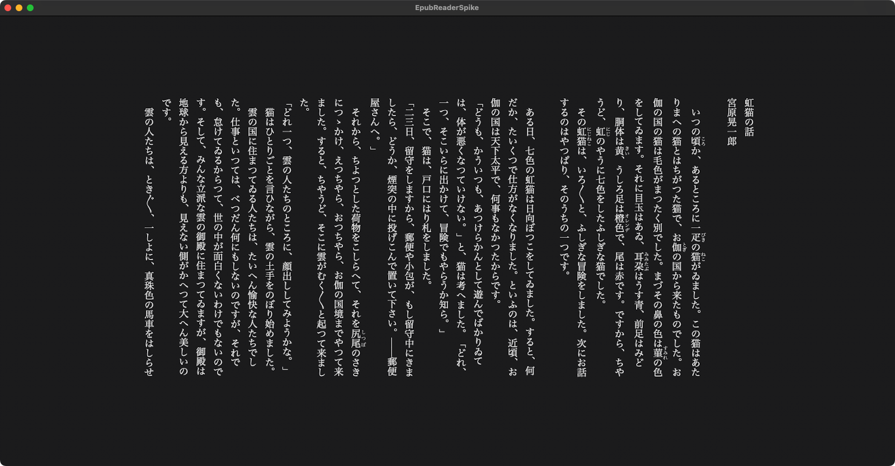
ここから先は、必要になったところだけ読めば十分です。 「本が増えてきた」なら三章、「見え方を変えたい」なら六章、 「聴きながら眠りたい」なら十章へ。
三 本を追加する
どれも同じ経路を通ります。使いやすいものをどうぞ。
- ドラッグ＆ドロップ — EPUB やフォルダをウィンドウへ落とす。1 冊だけ落とした場合はそのまま開きます
- 「本を追加」ボタン — 書棚の右上。「ファイルを選ぶ…」と「フォルダを選ぶ…」があります
- ファイル > 開く…（⌘O）— 本を選ぶパネル。複数選択できます
- ファイル > フォルダから追加…（⇧⌘O）— フォルダの中身をまとめて登録します
- Finder から —
.epubをダブルクリック、あるいはアプリのアイコンへ落とす
まとめて登録している間は、画面の上に進み具合の帯が出ます。読み込みは 1 冊ずつ順番に進むので、 数百冊を一度に落としても操作は止まりません。
EPUB ファイルは元の場所から動かしません。アプリの中へコピーせず、置いてある場所を読みにいきます。 あとからファイルを移動・削除すると、書棚には残ったまま「ファイルが見つかりません」と出ます。
四 書棚を使う
{kind=link}
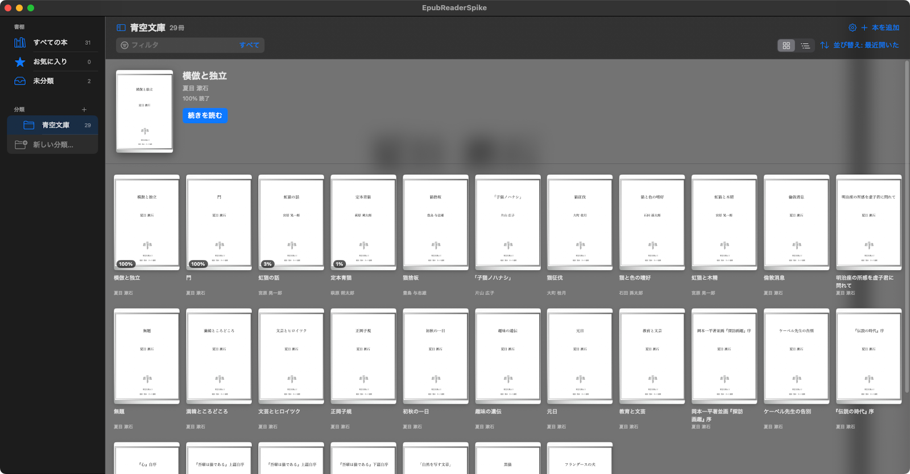
探す・並べる
- フィルタ — 上の検索欄。対象は「すべて／タイトル／作者／出版社」から選べます
- 並び替え — 最近開いた／タイトル／作者／出版社
- 表示 — 「グリッド」と「作者別」。右上の 2 つのボタンで切り替えます
{kind=link}
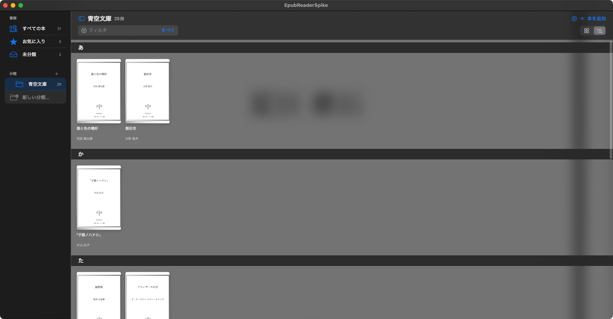
分類（コレクション）
サイドバーの「分類」の +、または本を右クリック →「分類 > 新しい分類に入れる…」で作ります。
分類は入れ子にでき、名前の変更・最上位への移動・削除ができます。
分類を消しても本は消えません（「未分類」へ戻るだけです）。
本を右クリックしてできること
- お気に入りに追加／外す
- 分類に入れる（その場で新しい分類を作れます）
- 作者の読みを設定… — 五十音インデックスの並びに使います。空欄にすると EPUB の情報に戻ります
- 書棚から削除（EPUB ファイル自体は消えません）
五 本を読む
ページを送る
| 矢印キー | ページを送る／戻す |
|---|---|
| マウスホイール | ページを送る／戻す |
| ⌘] / ⌘[ | 次のページ／前のページ |
メニューの「次」「前」は綴じ方向に依らない論理的な向きです。 縦書き・右綴じの本では左右の意味が反転するため、矢印キーは本文側の処理に任せ、メニューには割り当てていません。
ツールバー
{kind=link}
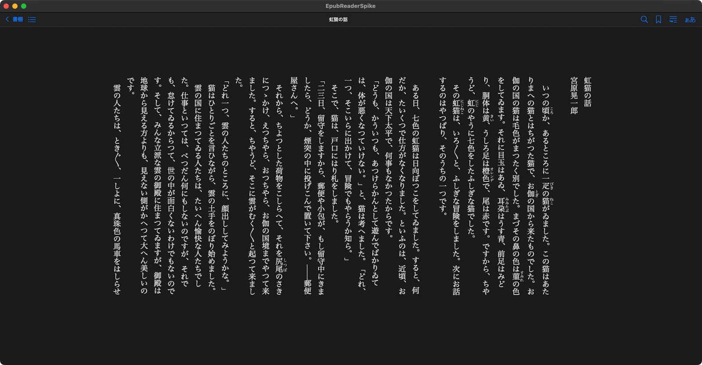
目次
{kind=link}
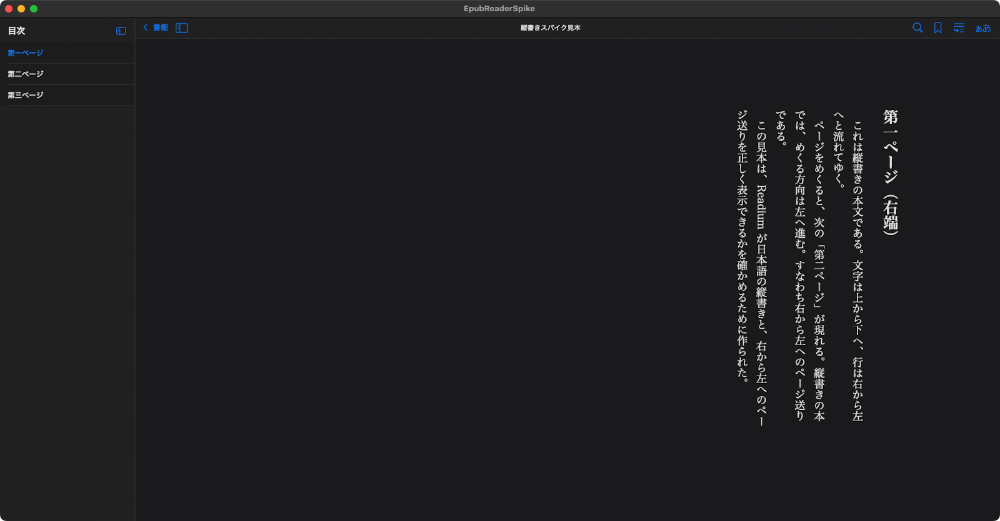
しおり
現在ページに挟むなら、ツールバーのしおりボタンか「移動 > しおりを追加」。 本文で文を選んで右クリックすると、その一文に対して挟めます。
{kind=link}
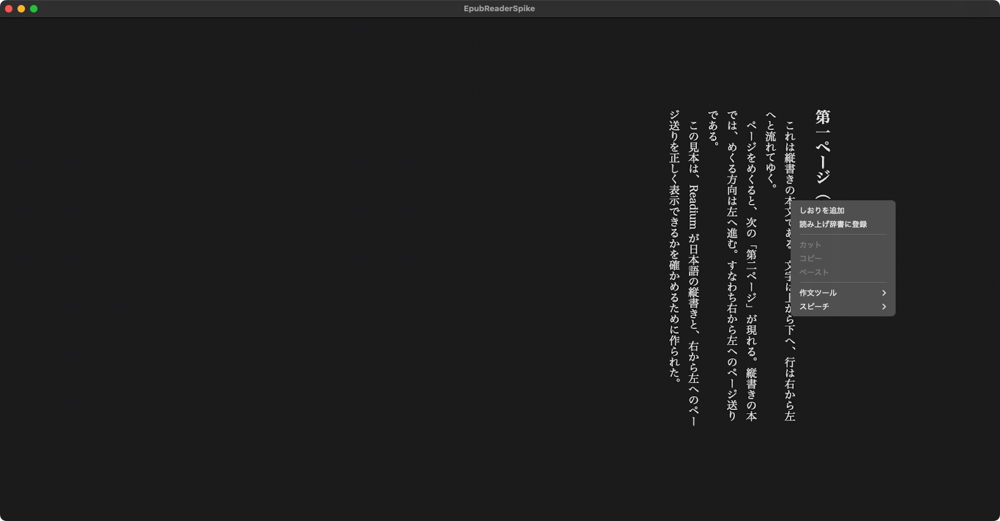
{kind=link}
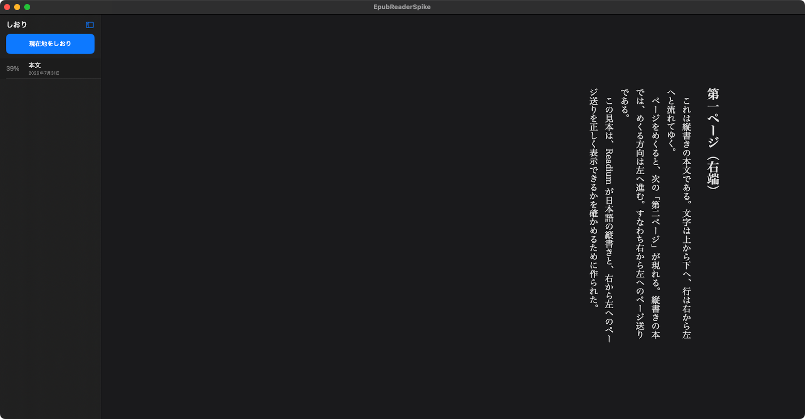
本文を検索
{kind=link}
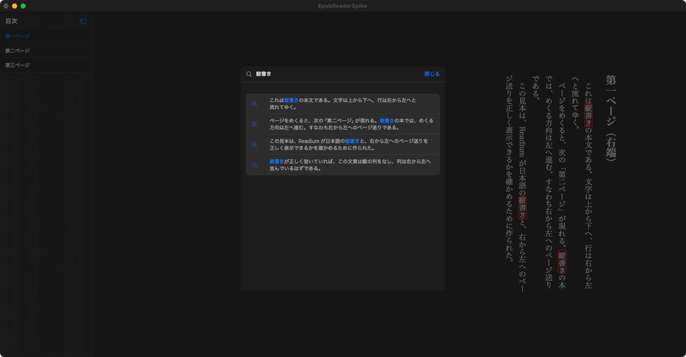
読書位置は自動で保存されます。書棚へ戻ったとき、ウィンドウを閉じたとき、アプリを終了するときに書き込まれます。
六 見え方を変える
メニューバーの「表示」に、環境設定の「表示」タブと同じ項目が並んでいます。シートを開かずに切り替えられます。
{kind=link}
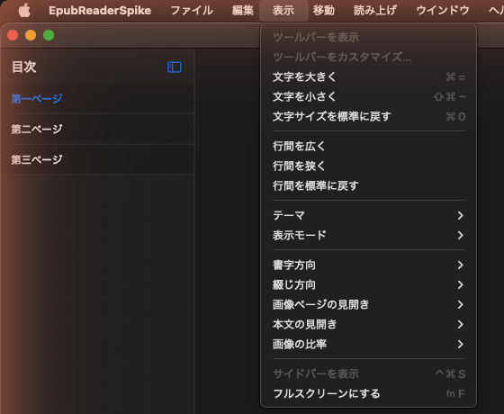
| 項目 | 内容 |
|---|---|
| 文字サイズ | 大きく ⌘= ／ 小さく ⇧⌘- ／ 標準に戻す ⌘0 |
| 行間 | 広く／狭く／標準に戻す |
| テーマ | 自動／ライト／セピア／ダーク |
| 表示モード | 読みやすさ優先／EPUB のまま |
| 書字方向 | 自動／縦書き／横書き |
| 綴じ方向 | 自動／右綴じ／左綴じ |
| 画像ページの見開き | 自動／常に見開き／常に単ページ |
| 本文の見開き | 自動／常に見開き／常に単ページ |
| 画像の比率 | 固定しない／この本の判型／判型を選ぶ／任意の比率…（本を開いているときだけ） |
二つの表示モードの使い分け
- 読みやすさ優先（既定）
-
画像を面いっぱいに広げ、表紙・口絵・章扉のような画像だけのページは自動で見開きに組みます。
preserveAspectRatio="none"で潰れた SVG 表紙の比率も直します。 縦書き指定が欠けている本は、EBPAJ 由来のクラス名や OPF のprimary-writing-modeから推測して補います。 - EPUB のまま
- 上の補正を全部止めて、EPUB に書いてあるとおりにエンジンが描いた姿を見ます。 配色・文字サイズ・行間は「EPUB のまま」でも効きます。読書のための設定であって、EPUB の解釈ではないからです。
縦書きにならない本があったら
EPUB の縦書き指定は欠けていることが多く、自動判定が外れることがあります。 その本を開いた状態で「表示 > 書字方向 > 縦書き」を選べば、その本の指定として覚えます。 ツールバーの書字方向ボタンからも同じことができます。
見開きがずれているとき
画像ページを表示している間だけ、ツールバーに「見開きをずらす」ボタンが出ます。 表紙の後に一枚ずれている本は、これを押すと組み合わせが一つずれて正しい対になります。 押して確かめる操作なので、ここだけメニューではなくツールバーに残してあります。
七 読み上げ
準備
- VOICEVOX（または AivisSpeech）を起動しておきます。
- アプリの環境設定（⌘,）→「読み上げ」タブを開きます。
- エンジンを選び、「エンジン状態」が接続済みになっていることを確かめます。
- 話者・話速・無音の長さを決めて「保存」。「テスト再生」でその場で聴けます。
{kind=link}
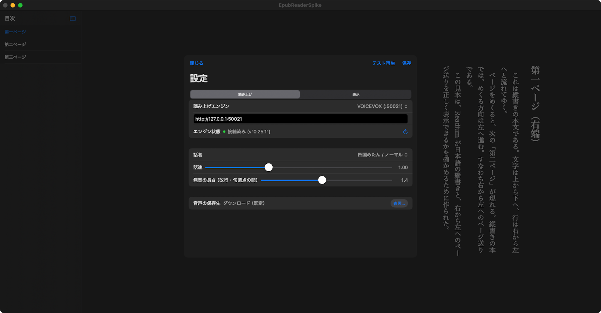
接続の確認だけならターミナルからでもできます（VOICEVOX の既定ポート）。
curl -s http://127.0.0.1:50021/version読ませる
| 本文をダブルクリック | その語の位置から読み上げを開始する |
|---|---|
| Space | 再生／一時停止（一時停止した続きから再開します） |
| Enter / Esc | 停止 |
| メニュー「読み上げ」 | 読み上げ開始／読み上げ停止／読み上げ辞書… |
読み上げ中は読んでいる箇所が光り、ページの終わりまで来ると自動で次のページへ進みます。 文の切れ目ごとに合成するので、長い章でも待たされずに読み始められます。
八 読み上げ辞書
人名や造語など、そのままでは読み間違える語を登録しておく機能です。 メニュー「読み上げ > 読み上げ辞書…」で開きます。本文の語を選んで右クリック →「読み上げ辞書に登録」でも入れられます。 読み上げにだけ効き、画面の表示は変わりません。
困るのは「1 文字の名前」
登場人物の名前が「明」（アキラ）だとします。
そのまま読ませると「メイ」や「アカリ」になってしまうので、辞書に 明 → アキラ を登録したくなります。
ところが、これを入れた瞬間に本文中の「明」がすべてアキラになります。
明日 → アキラ日 ／ 明確 → アキラ確 ／ 明暗 → アキラ暗 ／ 説明 → 説アキラ
日本語の読み上げでは短い語から優先してマッチするためで、 読み上げエンジン側のユーザー辞書には、これを止める仕組みがありません。
解き方：名前を下に、熟語を上に
この辞書は語ごとにレイヤー（1〜10）を持ち、大きいレイヤーから順に置換します。 置換し終えた部分は、下のレイヤーでは二度と触りません。だから手順はこうなります。
明 → アキラを低いレイヤー（たとえば 2）に置く。-
その作品に出てくる「明」を含む語を、高いレイヤー（たとえば 8）に登録する。
明日→アシタ、明確→メイカク、明暗→メイアン、説明→セツメイ…
こうすると、熟語のほうが先に確定して固まり、どこにも属さない裸の「明」だけがアキラになります。 小説なら出てくる熟語は限られているので、一度洗い出してしまえば、その本のあいだは読み間違えません。
{kind=link}
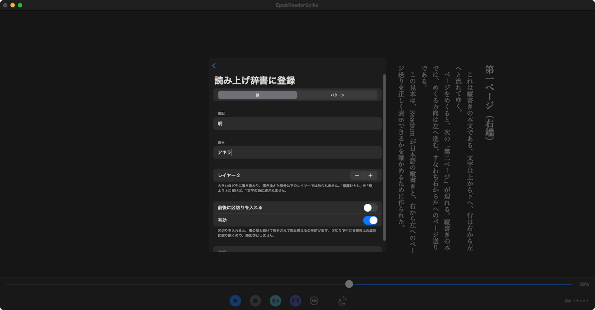
{kind=link}
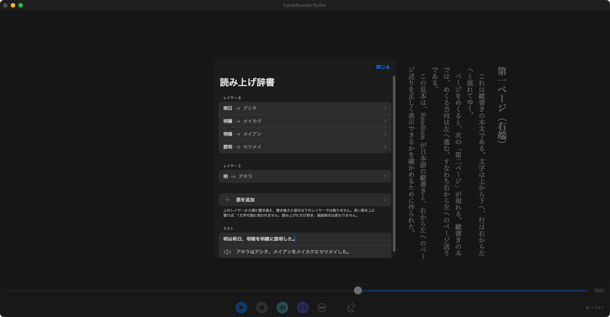
同じレイヤーの中では、表記の長い語から先に確定します。 レイヤーを付け忘れても、いきなり短い語に食われる事故は起きにくい作りです。
全部を手で登録するのか、という話
正直に言うと、この作業は本来かなり面倒です。長編なら「明」を含む語だけで数十件になりますし、 1 件ずつ画面から打ち込むのは骨が折れます。
そこでこのアプリは、辞書そのものを外から操作できるようにしてあります。
アプリは 127.0.0.1:47831 に 1 行 1 JSON（JSONL）のコマンド口を開いていて、
同梱の MCP サーバー経由で AI エージェントから叩けます。
「本文からその字を含む語を洗い出す → 読みを付けて流し込む → 実際に読み上げへ渡る文字列で検算する」
という往復を、人間が 1 件ずつ入力せずに回せます。
| コマンド | すること |
|---|---|
dictList | 登録済みの全件を適用順（レイヤー降順・同レイヤーは長い表記が先）で返す |
dictAdd | 語を 1 件足す（表記・読み・レイヤー・区切り・有効） |
dictUpdate / dictDelete | id を指定して直す・消す |
setRules | 辞書を丸ごと入れ替える（一括投入） |
applyRules | 任意の文に辞書を適用し、読み上げへ渡る文字列を返す |
# 語を足す
python3 scripts/bus.py '{"cmd":"dictAdd","surface":"明暗","reading":"メイアン","layer":8}'
# 読み上げに渡る文字列で検算する
python3 scripts/bus.py '{"cmd":"applyRules","text":"明は明日、明暗を明確に説明した。"}'
# → {"ok":true,"text":"アキラはアシタ、メイアンをメイカクにセツメイした。","injectedGaps":[]}
辞書はいま開いている本のリーダーに紐づくので、コマンドを送る前に本を 1 冊開いておいてください
（辞書そのものは書棚ごとに共有されます）。ポートは環境変数 EPUB_TEST_BUS_PORT で変えられます。
肝心なのは最後の applyRules です。
思ったとおりに読ませられているかを、音を聞かずに文字列で判定できるので、
エージェント側が自分の登録結果を自分で確かめ、外れていれば直す、という繰り返しが成り立ちます。
「意図どおりに読み上げられる辞書」を一冊分そろえるのは、そこまで手間ではありません。
mcp/epub-test-mcp/、
素の JSONL を投げるだけの小さなクライアントは scripts/bus.py にあります
（どちらも Python・外部依存なし）。
口はループバック（127.0.0.1）だけに開いていて、外のネットワークからは届きません。
受け付けるのも上の辞書まわりのコマンドだけです。
そのほかの項目
- パターン — 正規表現で置き換えます（
第(\d+)話のような書き方） - 前後に区切りを入れる — 隣の語と続けて解析されるのを防ぎます。区切りで生じる無音は合成前に取り除くので、間延びしません
- 有効 — 消さずに一時的に切っておけます
- テスト — 試したい文を入れると、置換の結果がその場に出ます
九 自動ページ送り
{kind=link}
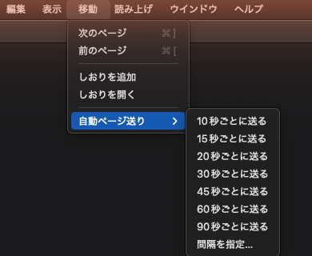
10・15・20・30・45・60・90 秒のいずれか、または「間隔を指定…」で任意の秒数を入れます。
- 次に送るまでの残り秒がボタンの横に出ます
- 読み上げ中は送りません（読み上げ側がページを進めるため）。この間は「—」と表示されます
- 本の終わりまで来ると自分から止まります
- 止めるときは同じメニューの「自動ページ送りを止める」
本を閉じても稼働状態は保たれるので、書棚に戻ってから解除することもできます。
十 スリープタイマー
{kind=link}
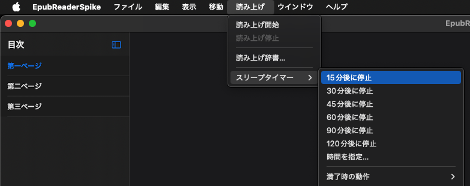
15・30・45・60・90・120 分、または「時間を指定…」。
満了時の動作
- 読み上げを停止
- 読み上げだけを止めます（既定）。
- Mac をスリープ
- 読み上げを止めてから Mac をスリープさせます。
- Mac をシャットダウン
- 読み上げを止め、30 秒の猶予を画面いっぱいに出してからシャットダウンします。 起きていれば「取り消す」で中止できますし、「今すぐシャットダウン」で待たずに実行もできます。 猶予の告知は書棚に戻っていても見えます。
タイマーは本を閉じて書棚に戻っても動き続け、書棚からでも解除できます。
十一 音声と動画の書き出し
{kind=link}
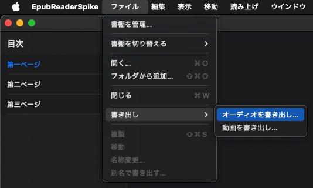
どちらも対象はいま読んでいるセクション（章）です。
- オーディオを書き出し…（WAV）
- セクションの文を順に合成し、一つの音声ファイルにまとめます。通勤中に自分の原稿を聴く、といった使い方に。
- 動画を書き出し…（MP4）
- 読んでいる箇所だけが発光する縦書きの朗読動画を作ります。録画ソフトも編集ソフトも要りません。
- 保存先は環境設定 > 読み上げ > 音声の保存先（既定はダウンロード）
- 合成の進み具合が画面に出ます。途中で中止できます
- 読み上げ中と書き出し中は、もう一方の書き出しがグレーになります（同じ合成経路を使うため）
- 書き出しにも読み上げ辞書と話者・話速の設定が反映されます
- 書き出している間もページ送りや設定変更はできます
朗読動画を作る部分だけを取り出した、ブラウザ単体で動くツールも
narration-video/ に入っています。
十二 書棚を切り替える
メニュー「ファイル > 書棚を切り替える」で、蔵書のセットそのものを丸ごと入れ替えます。 「ファイル > 書棚を管理…」から新しい書棚の追加・名前の変更・削除ができます。
{kind=link}
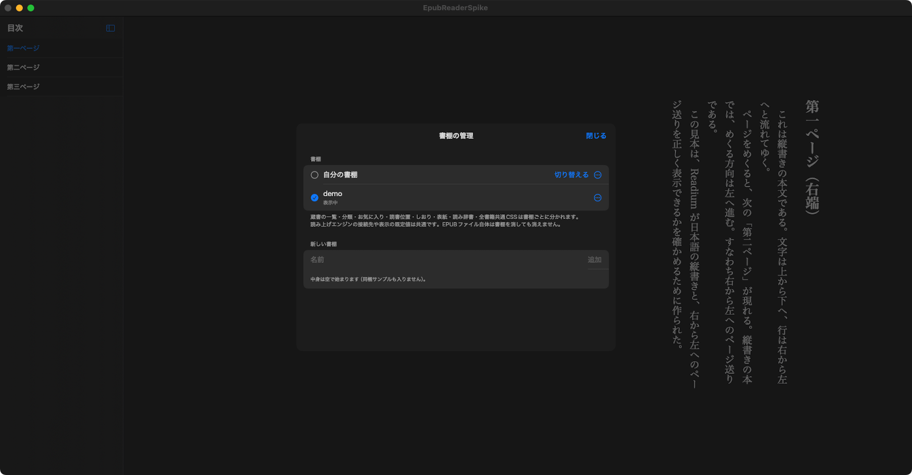
| 書棚ごとに分かれるもの | 共通のまま残るもの |
|---|---|
| 蔵書の一覧、分類、お気に入り、読書位置、しおり、表紙、読み上げ辞書、全書籍共通 CSS | 読み上げエンジンの接続先、話者・話速、表示の既定値といった機械の設定 |
なぜ「隠す」ではないのか
隠す作りだと、解除し忘れ・表紙のメモリキャッシュの残り・書棚の背景に敷いた表紙といった経路を ひとつ見落とすだけで漏れます。読む先を切り替える作りなら、読んでいないものは表示できません。 画面共有やスクリーンショットのために、公開できる本だけを入れた書棚を用意しておくのが使い方です。
- 最初からある書棚と、いま表示中の書棚は消せません
- 書棚を消しても、EPUB ファイル自体は消えません。データも消さずに残すので、取り違えても戻せます
- EPUB ファイルは書棚をまたいで共有されます。同じ本を二つの書棚に置いても、二重に持つことにはなりません
十三 環境設定
⌘,（メニュー「EpubReaderSpike > 環境設定…」）で開きます。タブは二つです。
読み上げ
- 読み上げエンジン（VOICEVOX / AivisSpeech）と接続状態、エンジンの URL
- 話者、話速
- 無音の長さ（改行・句読点の間）
- 音声の保存先（既定はダウンロード）
表示
{kind=link}
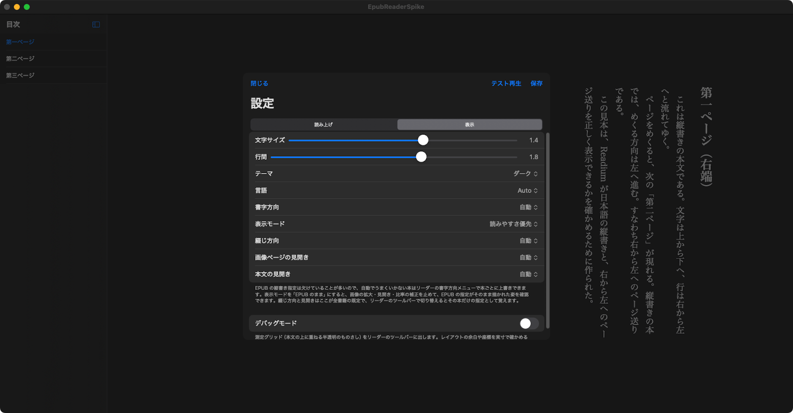
- 文字サイズ、行間、テーマ
- 言語（Auto / 日本語 / English）— 反映はアプリの再起動後です
- 書字方向、表示モード、綴じ方向、画像ページの見開き、本文の見開き
- デバッグモード — 入れるとリーダーのツールバーに測定グリッドのボタンが出ます
変更は「保存」で反映されます。「テスト再生」は保存前でも試せます。
十四 ショートカット一覧
| ⌘O | 開く…（本を選ぶ） |
|---|---|
| ⇧⌘O | フォルダから追加… |
| ⌘, | 環境設定… |
| ⌘F | 本文を検索（本を開いている間） |
| ⌘] | 次のページ |
| ⌘[ | 前のページ |
| ⌘= | 文字を大きく（キーボードによっては ⌘; と表示されます。同じキーです） |
| ⇧⌘- | 文字を小さく |
| ⌘0 | 文字サイズを標準に戻す |
| ⌘W | 閉じる |
| 矢印キー | ページを送る／戻す |
|---|---|
| マウスホイール | ページを送る／戻す |
| Space | 読み上げの再生／一時停止 |
| Enter / Esc | 読み上げを停止 |
| ダブルクリック | その位置から読み上げ |
| 右クリック | しおりを追加／選択語を読み上げ辞書に登録 |
十五 うまくいかないとき
- アプリが「開発元を確認できない」と言われて起動しない
- ad-hoc 署名のためです。右クリック →「開く」で一度だけ許可してください（一章）。
- 読み上げが始まらない／エンジン状態が「未接続」
-
VOICEVOX（または AivisSpeech）が起動しているか確かめてください。
ポートを変えている場合は、環境設定の読み上げタブで URL を書き換えます（VOICEVOX の既定は
:50021、AivisSpeech は:10101）。 - 横書きで表示されてしまう
- EPUB 側に縦書き指定が無い本です。その本を開いた状態で「表示 > 書字方向 > 縦書き」を選ぶと、 その本の指定として覚えます。
- 表紙が潰れている／見開きの組み合わせがずれる
- 表示モードが「EPUB のまま」になっていないか確かめてください。「読みやすさ優先」なら比率を是正します。 組み合わせのずれは、画像ページ表示中に出る「見開きをずらす」ボタンで直せます。
- 目次が出ない
- その EPUB にナビゲーション文書が入っていません（青空文庫由来の本によくあります）。 読み進む位置はしおりと検索で補ってください。
- 読みを直したのに、別の語まで変わってしまった
- 短い語が熟語を食っています。壊されたくない長い語を、より上のレイヤーへ移してください（八章）。
- 書き出しのメニューがグレーになっている
- 本を開いていないか、読み上げ中か、もう一方の書き出しが走っています。停止してから実行してください。
- スリープタイマーで Mac が眠らない／落ちない
- 初回に出る「"System Events" を操作する許可」を許可していない可能性があります。 システム設定 → プライバシーとセキュリティ → オートメーション を確かめてください。
- 書棚に本が出てこない／「ファイルが見つかりません」
- EPUB ファイルは元の場所を読みにいきます。ファイルを移動・改名した場合は、もう一度追加し直してください。 外付けディスクに置いている本は、そのディスクを繋いでから開きます。
解決しないときは Issues へどうぞ。 本のどこがどう見えたか（できれば「EPUB のまま」で見た様子も）を書いていただけると助かります。